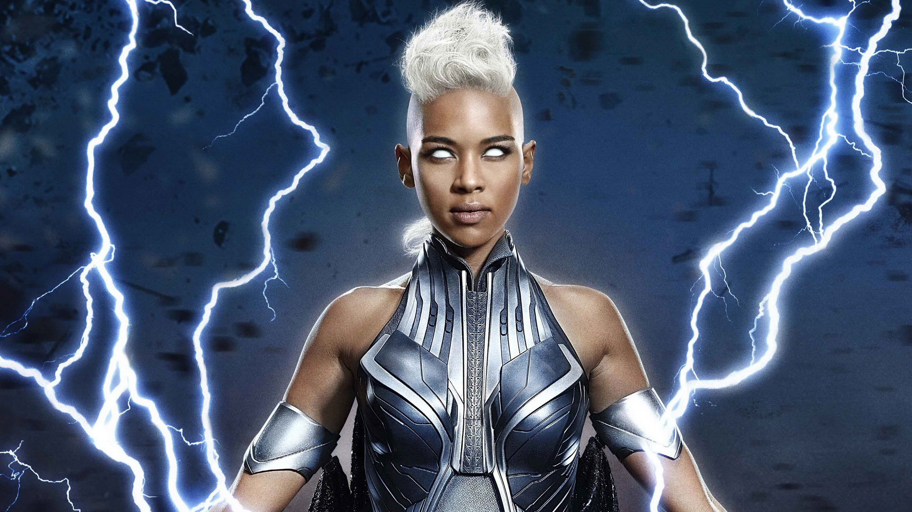
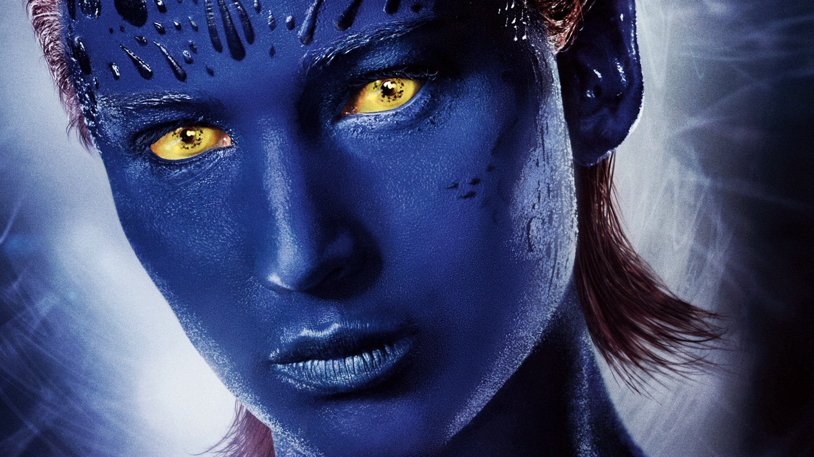

风暴女
拥有能随意控制气候的能力。在加入X战警之前，奥罗罗是个流浪儿，靠着做小偷、扒手的技能来过日子。在她的天赋显现后，受到了土著非洲部落的崇拜，被称作天气女神，后来遇到了X教授，并成为X战警的一员。
天使长
有超人的耐力和愈合力，血液可治疗血型相容者，天启找到的第三个骑士是在柏林搏击俱乐部里寻求刺激的富二代。在他的翅膀经受过严重的损害后，是天启给了他化悲痛为力量的机会。天启修复了天使的翅膀，并把翅膀的材料改为了有机金属。他能从他那看似坚不可摧的翅膀中发射致命的剃刀。

魔形女
作为一个变形人，魔形女具有转移她体内原子和分子来改变外貌的能力，使其无论看起来还是听起来都恰好象任何性别的人，就连指纹和声纹以及视网膜扫描也一样。变种人兄弟会的创始成员之一。万磁王最信任的属下。魔形女与万磁王有非常亲近的关系，渊源深厚。擅长武术、武器、电脑间谍、隐蔽以及特殊作战行动。